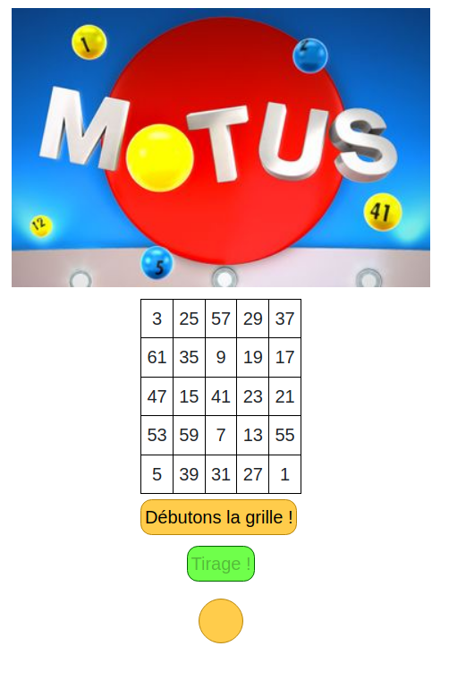
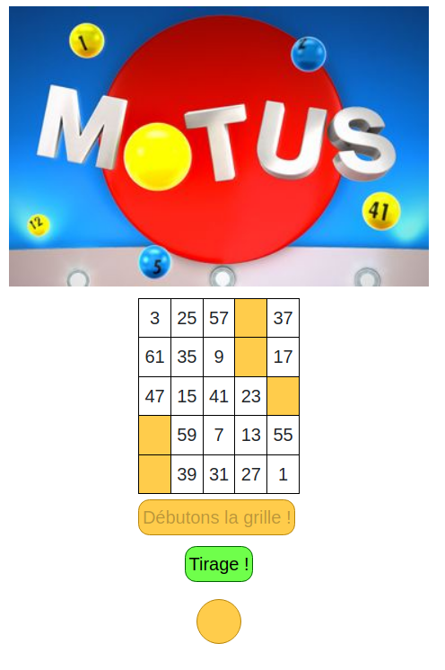
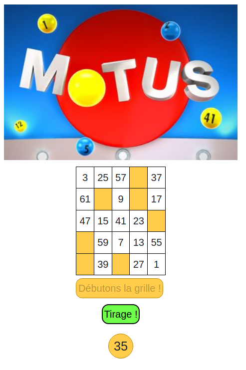
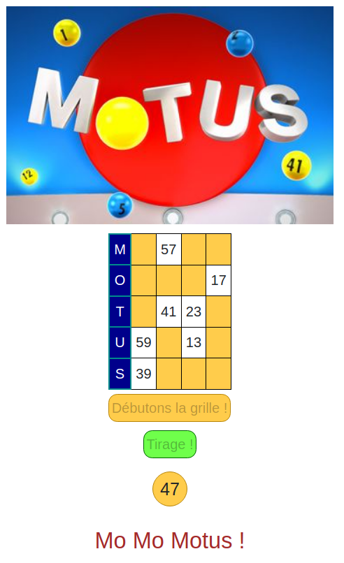

Dev Web en devenir !
Mo-mo-motus !
Petit projet Fun basé sur le jeu télévisé Motus - L'un de nos professeurs pour le JavaScript avait été nommé l'un des cours : mo-mo-module ! Tout au long de la journée le célèbre slogan de l'émission est revenu nous trotter dans la tête jusqu'à qu'il dise : "Ca pourrait être marrant de coder ça !" auquel j'ai répondu "challenge accepted !"
Après quelques heures passé dessus, un de HTML, CSS, PHP et Javascript, voici le résultat : https://github.com/FabienBaraille/Mo-mo-modus



